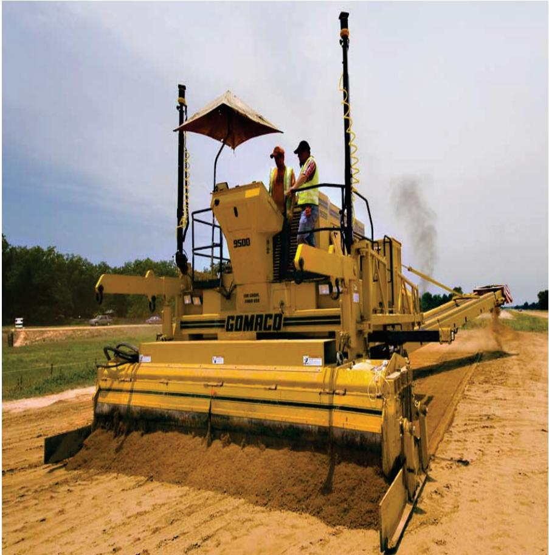
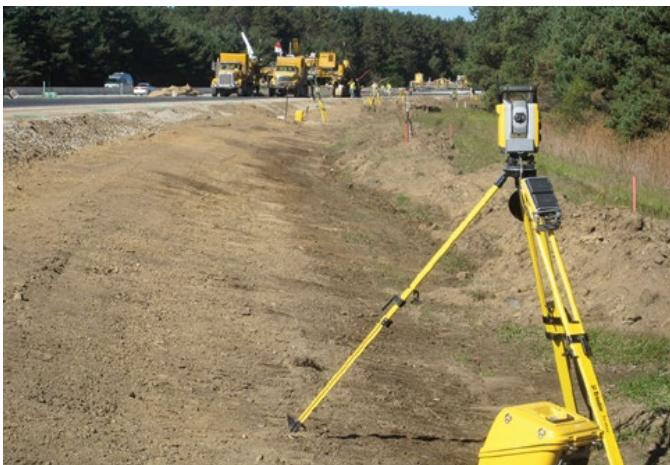
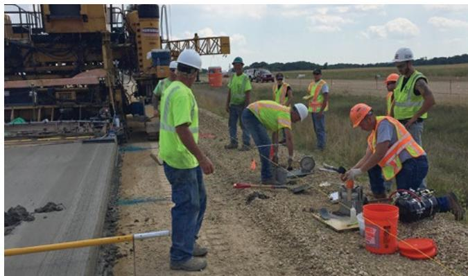
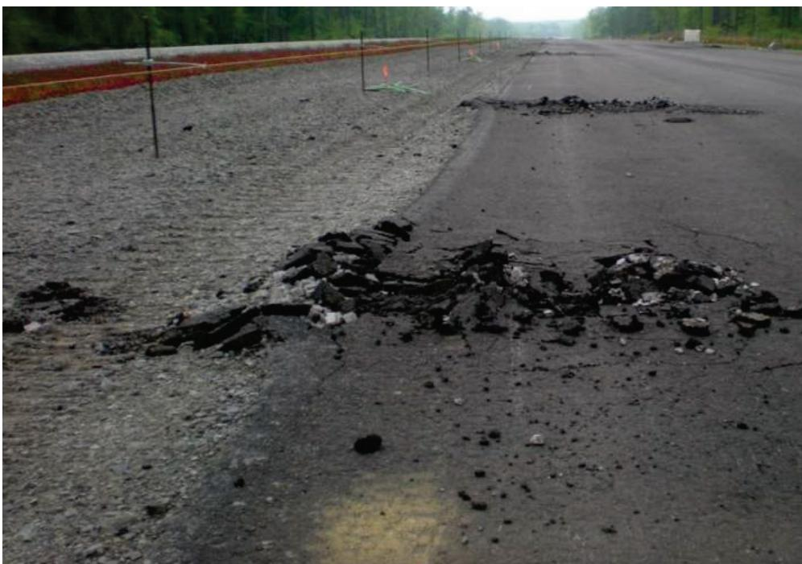
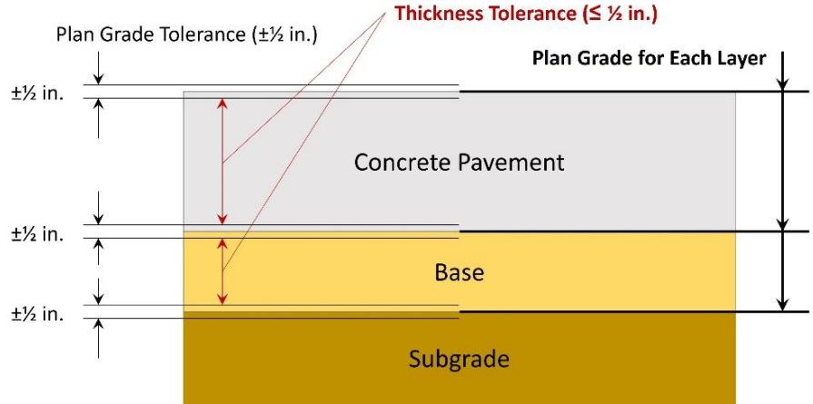

Material Testing and Subgrade Preparation
Material testing and subgrade preparation are quality‑control activities performed before concrete placement to evaluate the condition of the base surface, ensuring it is uniformly graded, compacted to required densities, and maintained at appropriate moisture levels so that elevation tolerances, frictional restraint, and cement hydration are controlled [2] [3]. The process employs visual inspection for soil‑type changes, systematic rolling patterns with Proctor‑derived density and optimum moisture measurements, and advanced tools such as proof‑rolling or intelligent compaction to locate non‑uniform or unstable zones that must be repaired, undercut, re‑blended, or re‑moistened before paving [2] [4]. Successful execution also requires qualified testing personnel, calibrated equipment, and comprehensive documentation of all measurements and corrective actions, thereby protecting the subgrade from fines infiltration and supporting long‑term pavement performance [3] [5].
Sources (5)
Purpose and quality objectives
Material testing and subgrade preparation evaluate the condition of the base surface before concrete placement, controlling its evenness, elevation tolerance, compaction density, moisture level, and frictional restraint. The base must be properly graded and compacted (if unbound) to meet elevation tolerances and density requirements. unbound base surface moisture should be controlled—too dry of a surface can draw moisture from the concrete affecting cement hydration. Key items during subgrade inspection include identifying changes in soil type and monitoring moisture content. Intelligent compaction (Figure 5.2) or proof rolling (Figure 5.3) should be used to identify nonuniform or unstable areas, which should be repaired or undercut and replaced with suitable material. Additional moisture should be added to either the subgrade or subbase as needed to ensure that it is uniformly moist. Verify that Proctor densities and optimum moisture contents correspond to delivered aggregate materials. Verify that mixtures conform to the job mix formula (JMF). Verify that placement, consolidation, and finishing operations produce a uniform, nonsegregated product. Verify that controls are in place to meet minimum thickness and smoothness tolerances. Protect from infiltration of fine materials. Ensure the required material test equipment is available on site and is in proper working condition. Verify that the concrete testing technicians meet the requirements of the contract documents for training/ certification. Verify that handheld concrete vibrators are the proper diameter and are operating correctly. Verify that all floats and screeds are straight, free of defects, and capable of producing the desired finish. Visually monitor for changes in soil type and moisture content. Identify non‑uniformity and instability – repair subgrade/subbase failures before paving. Visually monitor for segregation and changes in moisture content. Monitor lift thickness when appropriate. Drainable subbases should be protected from infiltration of fines which can reduce drainage capacity. Check the finished grade – subgrade or subbase should be ±0.02′ from plan elevation. Blend and compact trimmed material into low spots uniformly – fine materials that are trimmed from high spots should be re‑used in a manner which does not result in segregated pockets of granular materials. Subgrade/Subbase should be sprinkled with water and remain damp before concrete spreading occurs. [2][3][4][5]
The following figure illustrates fine grading with a trimmer to achieve the required elevation tolerances.

A yellow GOMACO trimmer performing fine grading on a subgrade. [5]The image displays a large piece of construction equipment, identified as a trimmer by the caption, actively shaping and smoothing the earth surface.
[2] — Ch. 5 (pp. 213–214); [3] — Ch. 4 (pp. 54–76); [4] — Ch. 6 (p. 159); [5] — 4. Pre-Paving (pp. 42–55), 5. Plant Site and Mixture Prod… (p. 71)
Material testing and subgrade preparation are intended to verify that the foundation is uniform, stable, properly graded and compacted within elevation tolerances, and maintains controlled moisture so that density objectives are met. The guides require that “The evenness of the base surface is critical, as irregularities outside of the tolerances can lead to variations in slab thickness and potential thin pavement sections,” and that “unbound base surface moisture should be controlled—too dry of a surface can draw moisture from the concrete affecting cement hydration, leading to differential shrinkage and the potential for cracking.” They also note that “Loss of traction between the slipform paver’s tracks and the base is another potential problem from excessive moisture or soft base layers.” Verification of Proctor‑derived densities and optimum moisture contents is mandated (“Verify that Proctor densities and optimum moisture contents correspond to delivered aggregate materials”), with proof rolling or intelligent compaction used to locate deficiencies (“Proof roll or use intelligent compaction methods to identify nonuniformity”). Visual monitoring for soil type changes, segregation, and moisture variations is required (“Visually monitor for changes in soil type and moisture content”) and any identified non‑uniform or unstable zones must be repaired (“Identify non‑uniformity and instability – repair subgrade/subbase failures before paving”). Drainable subbases must be protected from fine infiltration (“Drainable subbases should be protected from infiltration of fines which can reduce drainage capacity”). Finally, reliable testing depends on qualified personnel and functional equipment (“Verify that the concrete testing technicians meet the requirements of the contract documents for training/ certification” and “Ensure the required material test equipment is available on site and is in proper working condition”), preventing unreliable results that could compromise pavement durability. [2][3][4][5]
The following figure illustrates how subgrade and subbase failures must be repaired to achieve uniform support.
 Excavated subgrade failure in a pavement base requiring repair. [5]
Excavated subgrade failure in a pavement base requiring repair. [5]
The image displays a large, rectangular excavation within an asphalt surface that exposes the underlying soil and aggregate layers.
[2] — Ch. 5 (pp. 213–214); [3] — Ch. 4 (pp. 54–56); [4] — Ch. 6 (p. 159); [5] — 4. Pre-Paving (pp. 42–55), 5. Plant Site and Mixture Prod… (p. 71)
Scope and applicability
“Material testing and subgrade preparation” is required for any concrete pavement project—airport slabs, highway decks, or full‑depth repairs—whenever the concrete will be placed over unbound base material, cement‑treated or lean‑concrete bases, open‑graded drainage layers, natural or chemically modified soils, recycled base material, granular subbases, stabilized bases (cement‑treated permeable aggregate or asphalt), drainable subbases, or any underlying subbase material. The procedures also cover the concrete paving layer itself during spreading and placement.
The guides mandate pre‑placement quality‑control activities to verify that the site, materials, equipment, and personnel are ready: “Prior to placing any concrete, preplacement QC activities should be performed to ensure that the site, materials, equipment, and personnel are prepared.” Daily verification of subgrade and subbase condition includes identifying changes in soil type and monitoring moisture content (“Key items during subgrade inspection include identifying changes in soil type and monitoring moisture content.”).
Grading and compaction must meet elevation tolerances and density criteria: “The base must be properly graded and compacted (if unbound) to meet elevation tolerances and density requirements.” Moisture control is essential; surface moisture that is too dry can draw water from the concrete, while excessive moisture—such as heavy rainfall—may cause instability and delay paving: “unbound base surface moisture should be controlled—too dry of a surface can draw moisture from the concrete affecting cement hydration” and “excessive moisture, such as from heavy rainfall, may result in base instability and a delay period while conditions improve.”
Compaction verification uses established rolling patterns and QC measurements (moisture and density): “Establish a rolling pattern and verify that desired objectives are achieved with QC measurements (moisture and density).” Advanced methods such as intelligent compaction or proof‑rolling are required to locate non‑uniform or unstable zones: “Intelligent compaction (Figure 5.2) or proof rolling (Figure 5.3) should be used to identify non‑uniform or unstable areas, which should be repaired or undercut and replaced with suitable material.” Identified deficiencies must be remedied by repair, undercutting, replacement, or re‑blending and compacting trimmed material to avoid segregated pockets: “Blend and compact trimmed material into low spots uniformly – fine materials that are trimmed from high spots should be re‑used in a manner which does not result in segregated pockets of granular materials.”
All mixtures must conform to approved job‑mix formulas, Proctor densities, and optimum moisture contents: “Verify that Proctor densities and optimum moisture contents correspond to delivered aggregate materials” and “Verify that mixtures conform to the job mix formula (JMF).” Placement, consolidation, and finishing operations are inspected to ensure a uniform, non‑segregated product with minimum thickness and smoothness tolerances.
Specific project conditions trigger additional measures. When high frictional restraint is possible on cement‑treated, lean‑concrete, or open‑graded bases, mitigation such as bond‑breaker coating is required: “Mitigating restraint on cement‑treated or lean concrete base surfaces is done using a bond-breaker.” Drainable subbases must be protected from infiltration of fines to preserve drainage capacity: “Drainable subbases should be protected from infiltration of fines which can reduce drainage capacity.”
Operational factors that can cause non‑uniformity—excessive belt‑placer speed, excessive vertical drop with gap‑graded mixes, or empty grout‑box events—must be monitored and corrected: “Visually inspect for areas of segregation where belt placers are used; excessive belt speed and excessive vertical drop can cause segregation (gap graded mixtures are prone to segregation).” Finished grade must be within ±0.02 ft of the plan elevation: “Check the finished grade – subgrade or subbase should be \pm 0 . 0 2 ^ { \prime }from plan elevation.”
The scope also extends to related work such as earthworks, asphalt paving, and base/subbase placement that are referenced in the quality‑control plan. [2][3][4][5]
[2] — Ch. 5 (pp. 213–214); [3] — Ch. 4 (pp. 54–56); [4] — Ch. 6 (p. 159); [5] — 4. Pre-Paving (pp. 42–49), 5. Plant Site and Mixture Prod… (p. 71)
Material testing and subgrade preparation for a granular subbase are mandatory components of the quality‑control process; they must be performed by confirming that Proctor densities and optimum moisture contents match the delivered aggregates, establishing and checking a rolling pattern against moisture and density objectives, ensuring spreading methods do not cause segregation, employing proof‑rolling or intelligent compaction to detect any nonuniformity, and promptly remediating any areas identified as deficient. [3]
The figure below illustrates intelligent compaction being applied to the subgrade.
Intelligent compaction used on subgrade [3]
The image shows a large, orange vibratory roller operating on an unpaved surface with mountains in the background. A worker wearing high-visibility safety gear is seated at the controls of the machine.
[3] — Ch. 4 (p. 56)
Test methods and procedures
The systematic material‑testing and subgrade‑preparation process begins with personnel verification: “Verify that the concrete testing technicians meet the requirements of the contract documents for training/ certification.” All required test gear must then be present and functional: “Ensure the required material test equipment is available on site and is in proper working condition. (Equipment typically includes a slump cone, pressuretype air meter, cylinder molds and lids, as well as a rod, mallet, ruler, and 10 ft straightedge.)” Handheld vibrators are inspected for size and operation: “Verify that handheld concrete vibrators are the proper diameter and are operating correctly.” A designated storage area for cylinders is also confirmed: “Ensure that sufficient storage area on the project site has been specifically designated for the storage of concrete cylinders.”
“Subgrade/Subbase should be sprinkled with water and remain damp before concrete spreading occurs.” The aggregate delivered is then checked against design densities: “Verify that Proctor densities and optimum moisture contents correspond to delivered aggregate materials.” The cement‑treated mix is compared to the approved formula: “Verify that mixtures conform to the job mix formula (JMF).” Placement, consolidation, and finishing steps are inspected for uniformity: “Verify that placement, consolidation, and finishing operations produce a uniform, nonsegregated product.”
Compaction proceeds according to an established pattern: “Establish a rolling pattern and verify that desired objectives are achieved with QC measurements (moisture and density).” After initial passes, non‑uniform zones are located using either traditional proof rolling or modern intelligent‑compaction tools: “Proof roll or use intelligent compaction methods to identify nonuniformity.” Any identified deficiencies are corrected promptly: “Remediate areas identified by proof rolling or intelligent compaction.”
Prior to extrusion through the paver, a visual check is performed to detect segregation or unmixed material: “Visually inspect for non‑uniformity before the concrete is extruded through the paver (segregation, unmixed materials, etc.).” During placement, operators continuously record concrete volume and extreme conditions: “Monitor the amount of concrete in front of the paver; note the time and location of extremes and correlate these events to the smoothness profiles.” If the grout box empties, the affected pavement is rejected: “Reject pavement in areas where the grout box empties.” [3][4][5]
[3] — Ch. 4 (p. 56); [4] — Ch. 6 (p. 159); [5] — 5. Plant Site and Mixture Prod… (p. 71)
Valid material testing and subgrade preparation depend on three interrelated controls. First, personnel qualifications are required: the concrete testing technicians must “meet the requirements of the contract documents for training/ certification,” and the QC manager together with the paving‑machine operator must continuously monitor grading, compaction, track slippage, vibration settings, elevation and steering to keep conditions within tolerances. Second, equipment calibration and readiness are mandatory: subgrade inspections must be performed daily using “agency‑approved equipment” such as intelligent compaction or proof rolling devices, and all required test apparatus—including slump cones, pressure‑type air meters, cylinder molds, lids, rods, mallets, rulers and straightedges—must be present on site and “in proper working condition.” Third, environmental controls must be enforced: the base surface moisture must be controlled—“too dry of a surface can draw moisture from the concrete affecting cement hydration” and “excessive moisture, such as from heavy rainfall, may result in base instability and a delay period while conditions improve”; additional water is added as needed to achieve a uniformly moist subgrade/subbase. A designated storage area for concrete cylinders must be provided, and “polyethylene sheeting should be kept ready to protect freshly placed concrete from rain” to prevent adverse weather effects. [2][3][4]
[2] — Ch. 5 (pp. 213–214); [3] — Ch. 4 (pp. 54–55); [4] — Ch. 6 (p. 159)
Sampling and testing frequency
Material testing and subgrade preparation rely on a systematic, condition‑driven approach to locate, size, and time sampling activities. The subgrade/subbase condition is verified each day before concrete placement, with inspection points selected wherever a change in soil type or moisture content is observed or where intelligent compaction or proof‑rolling equipment flags non‑uniform or unstable zones. Those flagged areas become the sampling spots and are remedied as needed; the source does not prescribe a fixed number of samples, but each identified zone is tested and corrected before work proceeds. For the stabilized base, a rolling pattern is established that dictates where moisture and density measurements are taken during construction; QC checks are performed on every roll to confirm objectives, and proof‑rolling or intelligent compaction methods are used to pinpoint any non‑uniformity for remediation and retesting. Concrete slab thickness is monitored in real time behind the paving machine by inserting a probe at roughly every 200 to 500 feet of pavement laid; each probe reading constitutes an individual sample, providing continuous verification that the plastic concrete meets or exceeds the specified slab depth. [3]
[3] — Ch. 4 (pp. 54–76)
Samples and measurements must be taken according to a predefined systematic pattern that mirrors the intended construction geometry. For granular subbase, establish a rolling pattern and record moisture content and density at each point against Proctor targets; proof‑rolling or intelligent‑compaction surveys are then run over the same layout to locate non‑uniform zones, which are corrected before work proceeds. During concrete placement, thickness checks are performed behind the paver at regular intervals (approximately every 200–500 ft) using a probe or devices such as the MIT SCAN‑T3; each reading must confirm that the plastic concrete meets or exceeds the design slab thickness. The QC plan should specify these methods and frequencies to ensure the collected data represent the material, process, lot, or completed work. [3]
The following figure illustrates a stringless paving system guidance method that supports these precision placement requirements.

Total station surveying equipment set up on a prepared subgrade at the FHWA Mobile Concrete Technology Center. [3]The image displays a yellow total station mounted on a tripod positioned on an unpaved construction site, with heavy machinery visible in the background. This equipment is used for stringless paving system guidance to ensure fine grading of the subgrade and subbase to the appropriate cross slope and elevation.
[3] — Ch. 4 (pp. 56–76)
Acceptance criteria and tolerances
The work is accepted only when the placed plastic concrete meets or exceeds the slab thickness called for in the paving plan, with real‑time thickness checks performed behind the paver at roughly 200 – 500 ft intervals using a probe or an MIT SCAN‑T3 device. The finished grade of the subgrade or subbase must lie within ±0.02 ft of the design elevation; any out‑of‑tolerance point requires correction and a repeat survey. Spot checks of paving hub elevations and grades are compared to a known benchmark, and the stringline is examined for abrupt changes or discontinuities. All pins and wands used for alignment must remain solid and resist movement. Prior to concrete placement the subgrade/subbase shall be watered and kept damp, and any section where the grout box empties is rejected. Visual inspection must confirm that the granular subbase shows no segregation; identified pockets are re‑blended and recompacted. Before extrusion through the paver, the mix is inspected for non‑uniformity, segregation, or unmixed material, with particular attention to belt placers where excessive speed or vertical drop can cause segregation. [3][5]
[3] — Ch. 4 (pp. 75–76); [5] — 4. Pre-Paving (pp. 47–49), 5. Plant Site and Mixture Prod… (p. 71)
Thickness of the plastic concrete is verified by taking real‑time measurements behind the paver at intervals of roughly 200 to 500 ft, and each measured value must meet or exceed the thickness called for in the paving plan; data from devices such as the MIT SCAN‑T3 are recorded for both quality‑control and acceptance purposes. The specification therefore relies on a pass/fail check of individual measurements rather than averaging results or assessing variability across a lot. [3]
The following figure illustrates a real-time smoothness measurement device mounted to the back of a paver.

Construction workers performing material testing and subgrade preparation on a concrete pavement site. [3]The image shows several construction personnel in high-visibility safety gear working alongside heavy paving machinery, with one worker kneeling to inspect the ground surface near a bucket of tools. The workers appear to be conducting visual inspections or taking measurements on the prepared soil, which is a necessary step to ensure uniform grading and compaction.
[3] — Ch. 4 (pp. 75–76)
Quality control and process monitoring
During production and construction the team must continuously monitor a set of material‑ and subgrade‑related characteristics to keep pavement quality consistent. “The evenness of the base surface is critical, as irregularities outside of the tolerances can lead to variations in slab thickness” and elevation accuracy should be kept within ±0.02 ft of the design plan by spot‑checking hubs, grades, and stringlines against known benchmarks: “Spot check paving hubs and grades for accuracy by checking against a known benchmark.” The base must be properly graded and compacted (if unbound) to meet elevation tolerances and density requirements: “The base must be properly graded and compacted (if unbound) to meet elevation tolerances and density requirements”; corresponding density and moisture are verified with Proctor testing: “Verify that Proctor densities and optimum moisture contents correspond to delivered aggregate materials.” Rolling patterns are confirmed with QC measurements of moisture and density: “Establish a rolling pattern and verify that desired objectives are achieved with QC measurements (moisture and density).” Surface moisture of unbound bases must be controlled—too dry can draw water from fresh concrete, while excessive moisture or a soft base can cause loss of traction for the slipform paver’s tracks: “unbound base surface moisture should be controlled—too dry of a surface can draw moisture from the concrete affecting cement hydration, leading to differential shrinkage and the potential for cracking.” and “Loss of traction between the slipform paver’s tracks and the base is another potential problem from excessive moisture or soft base layers.” Subgrade inspection must identify changes in soil type and monitor moisture content: “Key items during subgrade inspection include identifying changes in soil type and monitoring moisture content.” and “Visually monitor for changes in soil type and moisture content.” Non‑uniform or unstable zones are located with intelligent compaction or proof‑rolling: “Intelligent compaction (Figure 5.2) or proof rolling (Figure 5.3) should be used to identify nonuniform or unstable areas, which should be repaired or undercut and replaced with suitable material.” Subbase inspection adds monitoring for segregation, lift thickness when appropriate, and protection of drainable layers from fine infiltration: “Like subgrade inspection, subbase inspection should include monitoring for segregation and changes in moisture content and, when appropriate, monitoring the lift thickness.” and “Drainable subbases should be protected from infiltration of fines which can reduce drainage capacity.” Segregation in granular subbases is addressed by re‑blending and recompaction: “Visually identify areas of segregation in granular subbases – re‑blend materials and recompact.” Lift thickness must meet design specifications: “Monitor lift thickness when appropriate” and minimum thickness and smoothness tolerances are controlled: “Verify that controls are in place to meet minimum thickness and smoothness tolerances.” Personnel qualifications and equipment readiness are also tracked: “Verify that the concrete testing technicians meet the requirements of the contract documents for training/ certification.” Required test gear must be on site and functional: “Ensure the required material test equipment is available on site and is in proper working condition. (Equipment typically includes a slump cone, pressuretype air meter, cylinder molds and lids, as well as a rod, mallet, ruler, and 10 ft straightedge.)” Handheld vibrators must be correct and operational: “Verify that handheld concrete vibrators are the proper diameter and are operating correctly.” Floats and screeds must be straight and defect‑free: “Verify that all floats and screeds are straight, free of defects, and capable of producing the desired finish.” Alignment pins and wands must remain solid: “Check that pins and wands are solid and resistant to moving.” [2][3][4][5]
The following figure illustrates the constraints associated with base and pavement surface elevation tolerances.
 Constraints associated with base and pavement surface elevation tolerances. [2]
Constraints associated with base and pavement surface elevation tolerances. [2]
The figure illustrates the vertical stacking of subgrade, base, and concrete pavement layers to demonstrate how individual plan grade tolerances can compound to affect the final thickness tolerance. It visually defines the allowable deviation for each layer’s surface elevation relative to its design grade, showing that even if every layer meets its specific plan grade tolerance, the resulting concrete pavement may still fall outside the required thickness limits. This concept is central to material testing and subgrade preparation because the QC function must check cross-slopes and elevations of the base using survey equipment before concrete placement to ensure that compounding tolerances do not lead to inadequate thickness.
[2] — Ch. 5 (pp. 213–214); [3] — Ch. 4 (pp. 54–56); [4] — Ch. 6 (p. 159); [5] — 4. Pre-Paving (pp. 42–55), 5. Plant Site and Mixture Prod… (p. 71)
The guides require immediate corrective action or additional testing whenever any of the following trends, deviations, or test results are observed during material testing and subgrade preparation: “any indication of a shift in soil type, abnormal moisture levels, segregation, or lift thickness that deviates from the expected uniform condition should prompt corrective action and possibly additional testing”; visual or measured “shift in soil type or moisture content”; base surface unevenness or finished‑grade measurements that exceed the specified elevation tolerance (±0.02 ft) or fail required density; lift thickness that does not meet design dimensions; loss of traction on slipform paver tracks, which signals excessive moisture or insufficient compaction; high coefficient of friction on cement‑treated or open‑graded drainage layers; Proctor density or optimum moisture content that does not correspond to the delivered aggregate; “QC measurements such as moisture or density fall outside the established objectives”; non‑uniformity, instability, or segregation identified by proof rolling, intelligent compaction, or visual inspection (“Visually monitor for changes in soil type and moisture content”); infiltration of fines into a drainable subbase; failure to satisfy checklist items for a drainable subbase, Joint Mix Formula specifications, or minimum smoothness tolerances; misalignment of paving hubs, stringlines, pins or wands; insufficient moisture (subgrade/subbase not kept damp) before concrete placement; grout‑box emptying or extreme concrete flow readings linked to poor smoothness; and belt‑placer induced segregation caused by excessive belt speed or vertical drop. Each observation triggers remedial measures such as moisture correction, re‑compaction, re‑blending, repair of unstable zones, protection from fines, adjustment of machine settings, re‑surveying, application of bond‑breaker treatments, or repeat material testing (density, moisture content, laboratory verification). [2][3][5]
[2] — Ch. 5 (pp. 213–214); [3] — Ch. 4 (pp. 54–56); [5] — 4. Pre-Paving (pp. 42–49), 5. Plant Site and Mixture Prod… (p. 71)
Nonconformance and corrective action
When inspection or testing indicates non‑conforming conditions in the base, subgrade or subbase, work shall be stopped immediately and the deficient area corrected before construction proceeds. The crew must address “nonuniform or unstable areas, which should be repaired or undercut and replaced with suitable material” and add moisture as required: “Additional moisture should be added to either the subgrade or subbase as needed to ensure that it is uniformly moist”. Any grade deviation beyond tolerance requires verification: “Check the finished grade – subgrade or subbase should be \pm 0 . 0 2 ^ { \prime }from plan elevation.” If out of tolerance, “Blend and compact trimmed material into low spots uniformly – fine materials that are trimmed from high spots should be re‑used in a manner which does not result in segregated pockets of granular materials.” The subgrade/subbase must then be “Correct the subgrade/subbase and re-survey.” Visual monitoring is required: “Visually monitor for changes in soil type and moisture content.” Non‑uniformity must be identified before paving: “Identify non‑uniformity and instability – repair subgrade/subbase failures before paving” and “Proof roll or use intelligent compaction methods to identify nonuniformity.” Identified zones are to be “Remediate areas identified by proof rolling or intelligent compaction.” The QC manager should ensure that the crew regularly checks base conditions, verifies compliance with the appropriate specifications (such as those for elevation or surface tolerances, pre‑wetting, application of choker stone or bond breaker) and makes real‑time paving adjustments. Conducting pre‑paving inspections, performing test sections, and maintaining clear communication with the crew about base conditions will help ensure that the unique characteristics of the base do not compromise pavement quality. To mitigate restraint on open‑graded bases, the Contractor should ensure the use of choke stone—a fine aggregate spread over the drainage layer—to reduce friction and provide a more uniform (or closed) surface condition. Mitigating restraint on cement‑treated or lean concrete base surfaces is done using a bond‑breaker. “Visually identify areas of segregation in granular subbases – re‑blend materials and recompact.” If grout box empties, “Reject pavement in areas where the grout box empties.” Finally, “Visually inspect for non‑uniformity before the concrete is extruded through the paver (segregation, unmixed materials, etc.).” [2][3][5]
The following figure illustrates how to identify subgrade and subbase failures.

Subgrade/subbase failure identified on a road construction site. [5]The image displays a paved roadway surface where the asphalt has fractured and broken apart, exposing underlying material along the edge of the shoulder. This visual evidence demonstrates non-uniformity and instability in the base that must be repaired before paving to ensure long-term pavement performance.
[2] — Ch. 5 (pp. 213–214); [3] — Ch. 4 (pp. 54–56); [5] — 4. Pre-Paving (pp. 42–49), 5. Plant Site and Mixture Prod… (p. 71)
Documentation and reporting
The material‑testing and subgrade‑preparation record must comprehensively capture all verification activities and corrective actions. It should include the Proctor density and optimum moisture‑content test results for each aggregate batch, together with the QC moisture‑and‑density measurements taken while establishing the rolling pattern. The documentation must also confirm that spreading techniques did not cause segregation and that the stabilized base or subbase mix conforms to the job‑mix formula, producing a uniform, non‑segregated layer with required thickness and smoothness tolerances. Proof‑roll or intelligent‑compaction data used to locate any non‑uniform zones shall be recorded, and any areas flagged by those inspections must be logged together with the remedial actions taken to correct the identified deficiencies. [3]
[3] — Ch. 4 (p. 56)
Relationship to long-term performance
Inspection of the base surface for elevation tolerances, density and moisture content directly governs pavement durability: when the QC manager confirms that grading and compaction meet specified tolerances, slab thickness remains uniform and thin sections are avoided; controlling surface moisture prevents cement hydration loss and differential shrinkage that would otherwise cause early cracking. Likewise, measuring the frictional restraint of the base—through observation of slip‑track behavior or by referencing known coefficients—guides the use of mitigation measures such as choke stone on open‑graded layers or bond‑breakers (sand or wax coating) on cement‑treated bases. By correcting any out‑of‑tolerance conditions before concrete placement, these inspections reduce restraint‑induced cracking and moisture‑related distress, thereby extending the expected service life of the pavement. [2]
The following figure illustrates the constraints associated with base and pavement surface elevation tolerances.

Diagram illustrating the elevation tolerances for concrete pavement, base, and subgrade layers. [2]The figure displays a cross-section of three distinct construction layers: Concrete Pavement, Base, and Subgrade. It visually defines the Plan Grade Tolerance for each layer as a specific vertical range around the designated grade line. The diagram also indicates that the Thickness Tolerance is constrained to be less than or equal to half an inch, ensuring uniform slab depth.
[2] — Ch. 5 (pp. 213–214)
After the pavement has been placed, a systematic post‑construction inspection of the subgrade is required. The first step is to re‑check that the in‑place material still meets the original specifications; this includes confirming that “Verify that Proctor densities and optimum moisture contents correspond to delivered aggregate materials.” A rolling pattern established during construction must be revisited so that “Establish a rolling pattern and verify that desired objectives are achieved with QC measurements (moisture and density).” can be applied to the finished surface. A proof‑roll or an intelligent‑compaction survey is then run – “Proof roll or use intelligent compaction methods to identify nonuniformity.” – to detect any thickness or density irregularities that fall outside tolerance. Any zones flagged by these methods are corrected in accordance with the corrective checklist: “Remediate areas identified by proof rolling or intelligent compaction.” [3]
[3] — Ch. 4 (p. 56)
References
- Best Practices Manual: Quality Control and Quality Acceptance of Concrete Airport Pavement ·
ACPTP-2022-4_QC_QA_of_concrete_airfield_pvmt_manual_w_cvr_508 - Quality Control for Concrete Paving: A Tool for Agency and Industry ·
QC_for_concrete_paving_web - Concrete Pavement Preservation Guide (Third Edition) ·
concrete_pvmt_preservation_guide_3rd_edition_web - Field Reference Manual for Quality Concrete Pavements ·
hif13059